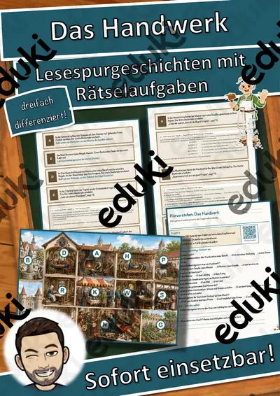
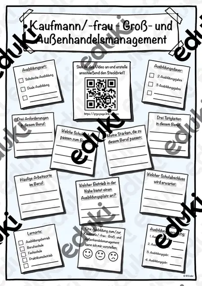
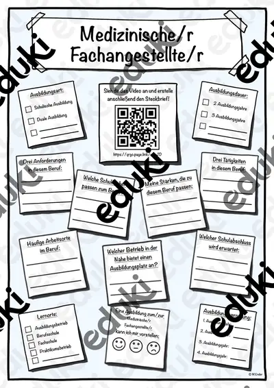

Berufe und Berufswahl: Arbeitsblätter für Klasse 1–10 (Sachunterricht)
Berufe begegnen Kindern früh, die Berufsorientierung beginnt aber erst in der Sekundarstufe. Das Material reicht von einfachen Berufebildern bis zu Steckbriefen von Ausbildungsberufen und Fragen des Arbeitsschutzes.
Im Unterricht begegnen den Lernenden zuerst Berufsbilder und Ausbildung. Wer weitergeht, behandelt Handwerk, Praktikum, Arbeitsschutz sowie Tätigkeiten.
Im Fach Sachunterricht gehört das Thema nach den Lehrplänen der Länder zum festen Programm, überwiegend in den Klassen 1 bis 10. Die Schülerinnen und Schüler beschreiben Tätigkeiten und Anforderungen ausgewählter Berufe und vergleichen sie mit eigenen Interessen.
Eine Reihe zu Berufe und Berufswahl lässt sich so gliedern: erst Berufsbilder erarbeiten, dann Ausbildung anwenden, später Praktikum und Arbeitsschutz vertiefen. Zu jedem Material gehört eine Musterlösung, die Korrektur und Selbstkontrolle erleichtert. Leistungsstarke und schwächere Lesende erhalten über die Lesespurgeschichten Texte in drei Stufen.
39 passende Materialien stehen bereit, etwa Bewerbung & Praktikum, Materialpaket Berufe Steckbriefe und Sprechanlässe: Berufe. Vertreten sind 1 Lesespurgeschichte, 1 Prüfungstraining und 3 Lückentexte mit Hörverstehen; die Stufen reichen über Klasse 1–10. Ein Interview mit einem Elternteil oder Handwerker aus dem Ort liefert glaubwürdige Antworten und echte Kontakte.
Das gehört zum Thema
Passende Arbeitsblätter und Materialpakete

Bewerbung & Praktikum – Paket Vorstellungsgespräch, Test & Vertrag: 6 Einheiten (Klasse 7–10)

Bewerbung & Praktikum – Paket Bewerbungsunterlagen: 5 Einheiten (Klasse 7–10)

Bewerbung & Praktikum – Paket Praktikum (Berufswahl bis Reflexion): 8 Einheiten (Klasse 7–10)

Materialpaket Berufe Steckbriefe (Ausbildungsberufe) #Glückspilze24 #Glückskekse25 #edukiknaller24

Das Handwerk und die Zünfte – Lesespurgeschichte mit Rätselaufgaben (Klasse 7)

Berufswahl und Ausbildung – Prüfungstraining Wirtschaft (Klasse 9)

Beruf Lückentext mit Wortspeicher Hörverstehen und Suchsel

Handwerk Lückentext mit Wortspeicher Hörverstehen und Suchsel

Ausbildung Lückentext mit Wortspeicher Hörverstehen und Suchsel

Sprechanlässe: Berufe – Sprechanlässe – Klasse 1–4

Lesen, Malen und Kleben: Berufe – Lesen und Malen – Klasse 1–4

Wortspiele: Sag es nicht! Berufe – Klasse 2–4

Wort-Bild-Karten: Berufe – Wort-Bild-Karten – Klasse 1–4

Wortgitter-Suchsel: Berufe – Wortgitter – Klasse 1–4

Ich habe, wer hat? Berufe – Lese-Schleifen – Klasse 1–4

Bewerbung und Praktikum Praktikumsmappe und Praktikumsbericht

Lies und male Berufe – Leseverstehen und Ausmalen in 3 Stufen (Klasse 1–2, DaZ, Förder)

Arbeitsschutz & Jugendarbeitsschutzgesetz – Bewerbung & Praktikum, 3 Stufen, mit Hilfen & Lösungen (Klasse 7–10)

Berufswahl: Interessen & Stärken-Check – Bewerbung & Praktikum, 3 Stufen, mit Hilfen & Lösungen (Klasse 7–10)

Steckbrief Ausbildungsberuf Fachkraft Lagerlogistik

Steckbrief Ausbildungsberuf Zahnmedizinische/r Fachangestellte/r

Steckbrief Ausbildungsberuf Kaufmann/frau - Groß- und Außenhandelsmanagement

Steckbrief Ausbildungsberuf Medizinische/r Fachangestellte/r

Steckbrief Ausbildungsberuf Elektroniker/in
Weitere 15 Materialien zum Thema im Material-Finder.
Häufige Fragen
Für welche Klassenstufe passen die Arbeitsblätter zu Berufe und Berufswahl?
Die 39 Materialien zu diesem Thema sind für Klasse 1–10 ausgelegt, die meisten davon für Klasse 9. Einzelne Titel lassen sich mit Anpassung auch eine Stufe darunter oder darüber einsetzen.
Welche Inhalte decken die Materialien zu Berufe und Berufswahl ab?
Inhaltlich reicht die Auswahl von Berufsbilder über Ausbildung und Handwerk bis zu Arbeitsschutz; Details stehen bei den einzelnen Materialien.
Wie setze ich Berufe und Berufswahl im Unterricht ein?
Beginnen Sie mit einem Einstieg zu Berufsbilder und ergänzen Sie nach Bedarf. Ein Interview mit einem Elternteil oder Handwerker aus dem Ort liefert glaubwürdige Antworten und echte Kontakte.
Mehr Material nach Fach und Klasse
- Alle Materialien Arbeitslehre
- Arbeitsblätter Arbeitslehre Klasse 9
- Arbeitsblätter Arbeitslehre Klasse 10
- Unterrichtsmaterial Klasse 1
- Unterrichtsmaterial Klasse 2
- Unterrichtsmaterial Klasse 3
- Unterrichtsmaterial Klasse 4
- Unterrichtsmaterial Klasse 5
- Unterrichtsmaterial Klasse 6
- Unterrichtsmaterial Klasse 7
- Unterrichtsmaterial Klasse 8
- Unterrichtsmaterial Klasse 9
- Unterrichtsmaterial Klasse 10
Verwandte Lehrplanthemen
- Bewerbung und Praktikum (Deutsch, Klasse 8–10)
- Bauernhof und Nutztiere (Sachunterricht, Klasse 1–4)
- Dinosaurier und Urzeit (Sachunterricht, Klasse 1–5)
- Geld und Konsum (Sachunterricht, Klasse 2–10)
- Gesunde Ernährung (Sachunterricht, Klasse 1–8)